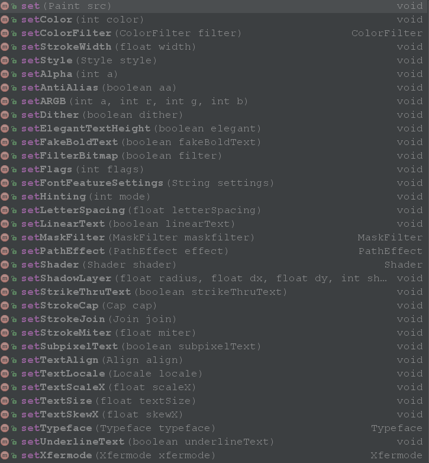

前言
的确平时开发中，用到画笔的地方还是不多的。但是一遇到自定义View，就会发现这玩意还真是不能不好好掌握，毕竟绘出我们想要的图形界面就靠它了。很多开发人员对画笔Paint的了解知之甚少，包括我自己在内，所以在今天在这里总结一下Paint的在 android图像处理中起到的作用和用法。
Paint的简单了解
同样，我们学习Paint之前，首先查看一下Paint类的API，其中，我们最需要关注的地方就是Paint类给我们提供了很多的setter方法，可以通过调用setter方法来设置自己的偏好。下面是在Android Studio中查到的Paint类的部分setter：

Paint(int flags)：构建Paint实例，常用的flags是ANTI_ALIAS_FLAG，消除锯齿。set(Paint src)：将另一个Paint复制给当前Paint实例，不多说了。setColor(int color)：设置画笔的颜色。setColorFilter(ColorFilter filter)：设置色彩过滤器，很重要，后面还会有一些总结。setStyle(Paint.Style style)：设置Paint的风格。 画笔样式分三种：1.Paint.Style.STROKE：描边 。2.Paint.Style.FILL_AND_STROKE：描边并填充 。3.Paint.Style.FILL：填充 。setAlpha(int a): 设置绘制图形的透明度。setAntiAlias(boolean aa)：是否消除锯齿。setARGB(int a,int r,int g,int b): 设置绘制的颜色，a代表透明度，r，g，b代表颜色值。setStrokeWidth(float width)：设置Paint划线的宽度。setDither(boolean dither): 设定是否使用图像抖动处理，会使绘制出来的图片颜色更加平滑和饱满，图像更加清晰setElegantTextHeight(boolean elegant): //设置优雅的文字高度，这个设置可能会对FontMetrics产生影响setFakeBoldText(boolean fakeBoldText): //设置文本粗体setFilterBitmap(boolean filter): //对位图进行滤波处理，如果该项设置为true，则图像在动画进行中会滤掉对Bitmap图像的优化操作，加快显示setFlags(int flags): //设置一些标志，比如抗锯齿，下划线等等。setFontFeatureSettings(String settings): //设置字体样式，可以设置CSS样式setHinting(int mode): 设置画笔的隐藏模式。可以是HINTING_OFForHINTING_ON之一。setLetterSpacing(float letterSpacing): //设置行的间距，默认值是0，负值行间距会收缩setLinearText(boolean linearText): //这个是文本缓存，设置线性文本，如果设置为true就不需要缓存setMaskFilter(MaskFilter maskfilter): //对图像进行一定的处理，实现滤镜的效果，如滤化，立体等,有BlurMaskFilter，EmbossMaskFilter几种setPathEffect(PathEffect effect): //设置绘制路径的效果，有ComposePathEffect，CornerPathEffect，DashPathEffect，DiscretePathEffect，PathDashPathEffect，SumPathEffect几种setShader(Shader shader): //设置着色器，用来给图像着色的，绘制出各种渐变效果，有BitmapShader，ComposeShader，LinearGradient，RadialGradient，SweepGradient几种setShadowLayer(float radius, float dx, float dy, int shadowColor): //设置阴影效果，radius为阴影角度，dx和dy为阴影在x轴和y轴上的距离，color为阴影的颜色 ，看一下演示效果，其中第一个是没有阴影的，第二个设置了黑色的阴影setStrikeThruText(boolean strikeThruText): //设置文本的删除线setStrokeCap(Cap cap): //设置线条末端形状Paint.Cap.BUTT、Paint.Cap.ROUND、Paint.Cap.SQUAREsetStrokeJoin(Join join): //设置矩形连接时的效果Paint.Join.BEVEL、Paint.Join.MITER、Paint.Join.ROUNDsetStrokeMiter(float miter): //当style为Stroke或StrokeAndFill时设置连接处的倾斜度，这个值必须大于0setSubpixelText(boolean subpixelText): //设置亚像素，是对文本的一种优化设置，可以让文字看起来更加清晰明显，可以参考一下PC端的控制面板-外观和个性化-调整ClearType文本setTextAlign(Align align): //设置文本对齐Paint.Align.CENTER、Paint.Align.LEFT、Paint.Align.RIGHTsetTextLocale(Locale locale)： //设置地理位置，比如显示中文，日文，韩文等，默认的显示Locale.getDefault()即可setTextScaleX(float scaleX): //设置字体的水平方向的缩放因子，默认值为1，大于1时会沿X轴水平放大，小于1时会沿X轴水平缩小setTextSize(float textSize): //设置字体大小setTextSkewX(float skewX): //设置文本在水平方向上的倾斜，默认值为0，推荐的值为-0.25setTypeface(Typeface typeface): //设置字体样式，可以是Typeface设置的样式，也可以通过Typeface的createFromAsset(AssetManager mgr, String path)方法加载样式setUnderlineText(boolean underlineText): //设置文本的下划线setXfermode(Xfermode xfermode)：设置Paint的模式，后面有详细点的说明，很重要。reset(): //重置PaintmeasureText(char[] text, int index, int count)，measureText(String text, int start, int end)，measureText(String text)，measureText(CharSequence text, int start, int end): //测量字体的长度breakText(char[] text, int index, int count,float maxWidth, float[] measuredWidth)，breakText(CharSequence text, int start, int end,boolean measureForwards, floatmaxWidth, float[] measuredWidth)，breakText(String text, boolean measureForwards,float maxWidth, float[] measuredWidth): //剪切显示，就是大于maxWidth的时候只截取指定长度的显示getTextWidths(char[] text, int index, int count,float[] widths)，getTextWidths(CharSequence text, int start, int end, float[] widths)，getTextWidths(String text, int start, int end, float[] widths)，getTextWidths(String text, float[] widths): //提取指定范围内的字符串，保存到widths中getTextPath(char[] text, int index, int count, float x, float y, Path path)，getTextPath(String text, int start, int end, float x, float y, Path path): //获取文本绘制的路径，提取到Path中getTextBounds(String text, int start, int end, Rect bounds)，getTextBounds(char[] text, int index, int count, Rect bounds): //得到文本的边界，上下左右，提取到bounds中，可以通过这计算文本的宽和高